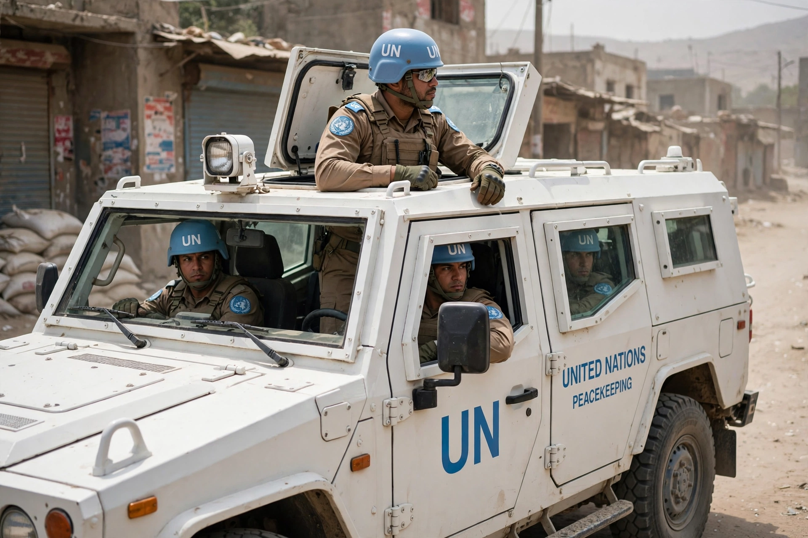

United Nations peacekeeping is a role held by the Department of Peace Operations of the United Nations as "a unique and dynamic instrument" for helping countries torn by conflict to create the conditions for lasting peace. Peacekeepers — soldiers, police and civilian staff contributed by member states and identifiable by their light-blue helmets — monitor ceasefires, protect civilians, support elections and help rebuild state institutions.
Peacekeeping is not expressly mentioned in the UN Charter; Secretary-General Dag Hammarskjöld famously placed it in "Chapter Six and a Half", between negotiation and enforcement. Its classic principles are consent of the parties, impartiality and non-use of force except in self-defence and defence of the mandate. The first mission, UNTSO (1948), sent unarmed military observers to Palestine; the first armed force, UNEF, was created during the 1956 Suez Crisis by Canadian foreign minister Lester B. Pearson, who won the Nobel Peace Prize for the initiative.
After the Cold War the number and ambition of missions surged, including operations in Cambodia, Mozambique and El Salvador, alongside notorious failures: UNAMIR's inability to prevent the 1994 Rwandan genocide and UNPROFOR's failure to protect the Srebrenica "safe area" in 1995. The 2000 Brahimi Report drove reforms, and mandates increasingly emphasised protection of civilians. UN peacekeeping collectively received the Nobel Peace Prize in 1988. By the 2020s roughly a dozen missions remained active, with large operations in the Democratic Republic of the Congo (MONUSCO), South Sudan (UNMISS) and the Central African Republic (MINUSCA), and the largest troop contributors including Bangladesh, Nepal, India, Rwanda and Pakistan. Peacekeepers have also faced scandals including sexual exploitation and abuse, and were linked to the introduction of cholera to Haiti in 2010.